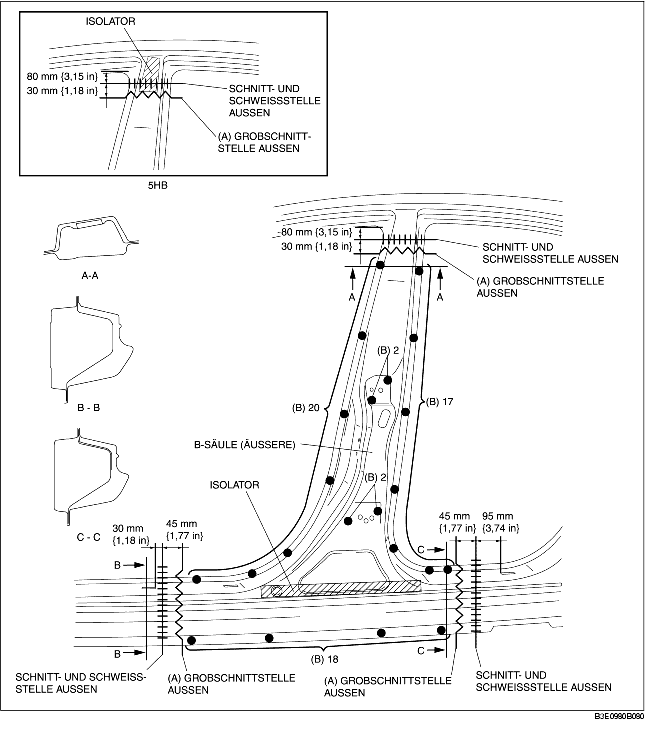
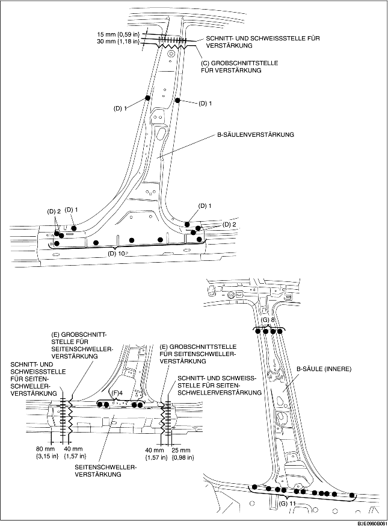

1. Bereich (A) grob vorschneiden, die 59 mit (B) gekennzeichneten Stellen aufbohren und dann die B-Säule (äußere) entfernen.
2. Bereich (C) grob vorschneiden, die 18 mit (D) gekennzeichneten Stellen aufbohren und dann die Verstärkung der B-Säule entfernen.
3. Bereich (E) grob vorschneiden, die 4 mit (F) gekennzeichneten Schweißstellen aufbohren und dann die Seitenschwellerverstärkung entfernen.
4. Die 19 mit (G) gekennzeichneten Schweißstellen aufbohren und die B-Säule (innere) entfernen.

